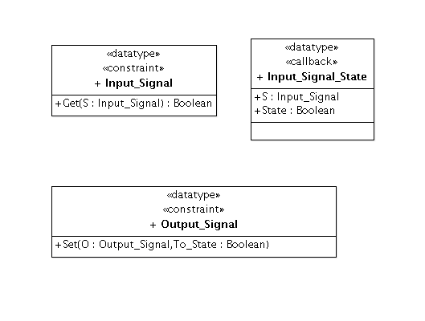

| ColdFrame: Testing | |
AUnit has the concept test case; for each test case there is a fixture, which corresponds to the standard setup that each test procedure in the test case expects.
The fixture is implemented using the test case operations Set_Up and Tear_Down.
ColdFrame supports Set_Up using its standard Domain.Initialize and Cascade_Initialize procedures.
ColdFrame supports Tear_Down by providing Domain.Tear_Down and Cascade_Tear_Down procedures.

Most systems are composed of numerous domains, some of which provide resources and capabilities to others. In the diagram, the application-level House Management domain uses the services of the device-level Digital IO domain.
While unit-testing House Management, it's a Bad Idea to use the real Digital IO, for various reasons:
What is needed is a version of Digital IO which provides the interfaces of the real thing but with an alternative implementation, more amenable to testing.
The first thing to do is to make a child package, Digital IO Interface, stereotyped «include». You may like to make it a separately controlled unit; you might even choose to create it as part of the development of the using domain, depending on the order of development.
In this package put all the «public» classes and «callback» types, any «type» types used by them, and any «exception»s.
| Complete package | 
|
| Interface package |  |
In the Interface package, include the tag {name = Digital IO}. This means that if you select the Digital IO Interface package and generate code from it, code will be generated as if it were the package Digital IO (though the code will still be placed in the directory derived from the actual package name, Digital_IO_Interface.gen/).
If this domain is not a new development, there may be existing
stub implementations that expect the "Digital IO Interface" name. If
so, you may not be able to use the {name} tag; as an alternative, you
can specify the DOMAIN_NAME variable to make:
$ make Digital_IO_Interface.gen DOMAIN_NAME=Digital_IO
or
$ make Digital_IO_Interface.gen DOMAIN_NAME='Digital IO'
The command line method overrides the {name} tag if both are given.
Don't set DOMAIN_NAME as an environment variable!
If you want, you can provide implementations in the parallel Digital_IO_Interface.impl/ directory, as normal. You'll want to provide some means of storing in parameters and providing values for out parameters and function results; you'll want to provide queries to find out what values were passed in. Remember that you can write package specs in the .impl directory, if needed.
You should generate Digital_IO_Interface.gen/ in your test directory. The stubs you want probably won't be the same as other developers also testing code that uses Digital IO.
Normally, ColdFrame generates the separate bodies of operations to raise Unimplemented, and you get to fill in the real code.
If you generate with GENERATE_STUBS set to yes
$ make Digital_IO_Interface.gen GENERATE_STUBS=yes
the separate bodies will contain stub code which
The stub code uses ColdFrame.Stubs.
No stub code is generated for protected types or tasks, but since the intention of the stub support is to implement domain interfaces this should not be a problem.
Your test case Set_Up must call ColdFrame.Stubs.Set_Up, and your Tear_Down must call ColdFrame.Stubs.Tear_Down.
If the stubbed code has output parameters or returns values of type T, instantiate ColdFrame.Stubs.Set_Output_Value with T.
-- Specify an output from a call to a stubbed operation for the
-- type T.
--
-- For_Subprogram_Named is the case-insensitive fully-qualified
-- name of the subprogram (eg, if dealing with procedure
-- Domain.Class.Operation, "Domain.Class.Operation").
--
-- Normally the named parameter will be an "out" (perhaps "in
-- out") parameter. The specified "To" value will be returned on
-- the "For_Call"th call, and all subsequent calls until another
-- "Set_Output_Value" call for the same parameter; if you want to
-- have the first 4 calls to Domain.Class.Operation to set Output
-- to 4, and any later ones to set it to 42, you'd say
--
-- Set_Integer_Output_Value ("Domain.Class.Operation", "Output", 4, 1);
-- Set_Integer_Output_Value ("Domain.Class.Operation", "Output", 42, 5);
--
-- A special parameter name is "return". For "return", the To
-- value will be the function result.
--
-- A previously stored value for a particular call can only be
-- overridden if Override is True (when it must be).
--
-- Overhead_Bytes is the additional space reserved for the
-- streamed representation.
generic
type T (<>) is private;
procedure Set_Output_Value (For_Subprogram_Named : String;
For_Parameter_Named : String;
To : T;
For_Call : Positive := 1;
Override : Boolean := False;
Overhead_Bytes : Natural := Storage_Overhead);
If the stubbed code has input parameters of type T and you want to check that your code has supplied the right values, instantiate ColdFrame.Stubs.Get_Input_Value with T.
-- Retrieve values passed to stubbed operations for the type T.
--
-- For_Subprogram_Named is the case-insensitive fully-qualified
-- name of the subprogram (eg, if dealing with procedure
-- Domain.Class.Operation, "Domain.Class.Operation").
--
-- The named parameter will be an "in" (perhaps "in out")
-- parameter. To retrieve the result of the second call, you'd say
--
-- Result := Get_Integer_Operation_Input_Value
-- ("Domain.Class.Operation", "Input", 2);
generic
type T (<>) is private;
function Get_Input_Value (For_Subprogram_Named : String;
For_Parameter_Named : String;
For_Call : Positive := 1) return T;
Call your instantiations of Set_Output_Value to set up the results of calls to stubbed subprograms.
Call ColdFrame.Stubs.Set_Exception if you want a stubbed subprogram to raise an exception.
-- Specify that a call to a stubbed operation is to raise an
-- exception.
--
-- For_Subprogram_Named is the case-insensitive fully-qualified
-- name of the subprogram (eg, if dealing with procedure
-- Domain.Class.Operation, "Domain.Class.Operation").
--
-- Normally the exception will be raised for the specified call
-- and all later calls; to stop this, use Ada.Exceptions.Null_Id.
--
-- A previously stored exception for a particular call can only be
-- overridden if Override is True (when it must be).
procedure Set_Exception (For_Subprogram_Named : String;
E : Ada.Exceptions.Exception_Id;
For_Call : Positive := 1;
Override : Boolean := False);
Call your code as required.
Call Number_Of_Calls to find out how often a subprogram
has been called.
-- Retrieve the number of calls made to the named subprogram.
function Number_Of_Calls (For_Subprogram_Named : String) return Natural;
Call your instantiations of Get_Input_Value to retrieve any parameters input to stubbed subprograms.